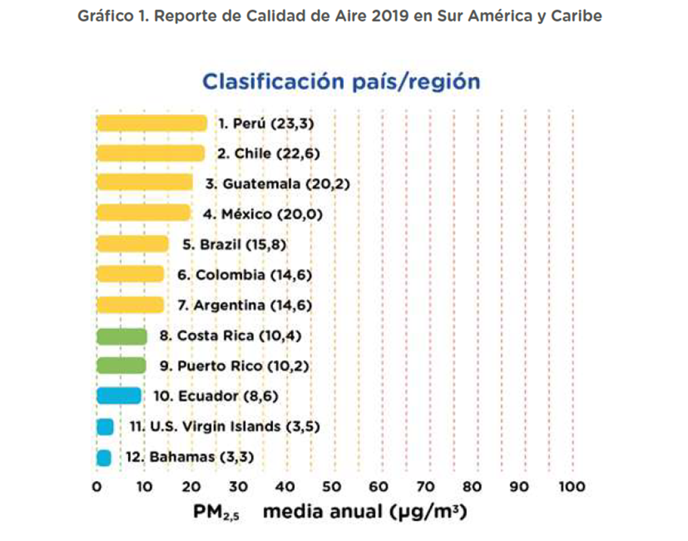
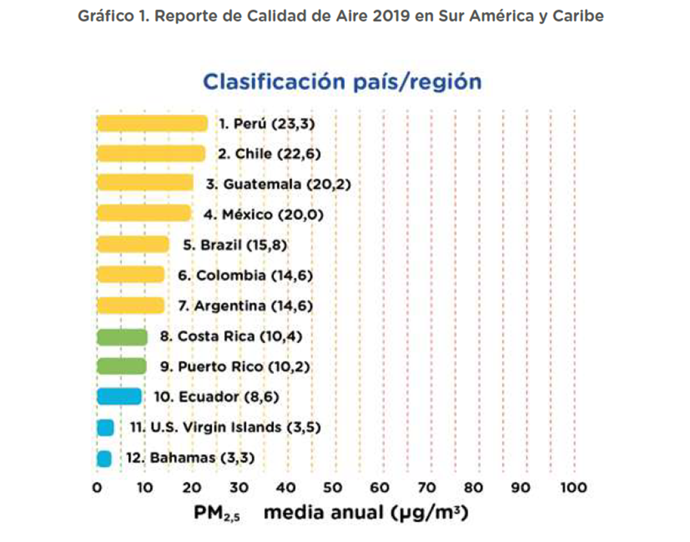
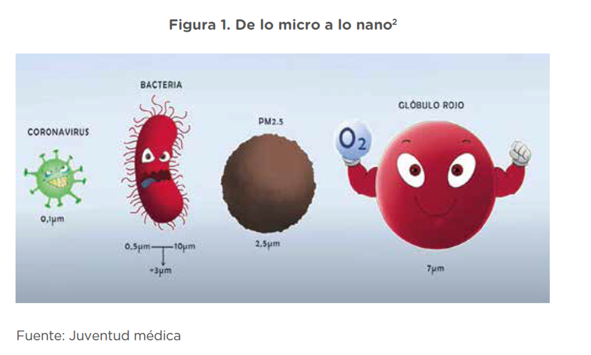
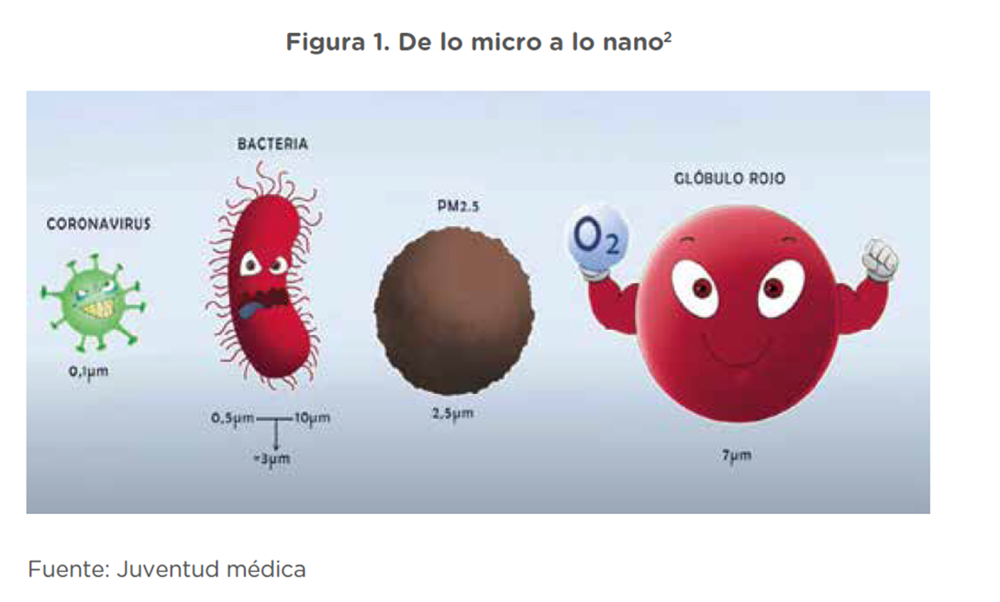

1.- ¿Qué es un número en notación Exponencial?
Cuando los científicos tenemos que escribir números muy grandes o muy pequeños, como por ejemplo 3.000.000.000.000.000 (tres mil billones) o 0,000.000.000.000.003 (tres milésimas de billonésima) los científicos utilizamos la notación exponencial, por ejemplo:
1.000 = 103 que se lee «diez a la tres»
0,001 = 10-3 que se lee «diez a la menos tres»
El exponente positivo es el número de ceros que suceden al 1 y el exponente negativo es la posición en que se encuentra el 1 detrás del punto. De esa manera, los números que hemos citado antes se escribirían:
3.000.000.000.000.000 = 3×1015 que se lee «tres por diez a la quince»
0,000.000.000.000.003 = 3×10-15 que se lee «tres por diez a la menos quince»
¿Tienes alguna pregunta o duda?

 
 
